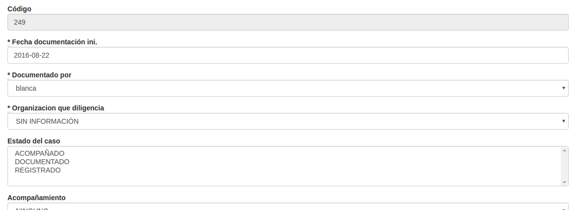

Logros
Puede iniciar una sesión y distinguir posibilidad de uso según el rol y según la organización.
Puede buscar casos por código y examinarlos.
Puede actualizar información de un caso o agregar casos nuevos
Puede eliminar un caso
SIVeL2 es una aplicación web por lo que se usa con un navegador que soporte Javascript. En el momento de este escrito, por economía, seguridad y velocidad sugerimos Chromium. En cuanto a sistema operativo, como los virus evidencian potenciales huecos de seguridad que pueden hacer perder los esfuerzos de seguridad de SIVeL2, recomendamos emplearlo desde computadores con OpenBSD/adJ o en su defecto Linux.
Hemos procurado que la operación de SIVeL2 sea simple, basta que tenga en cuenta generalidades de la interacción con su navegador y los elementos visuales de la aplicación por ejemplo:
Pestañas: Al ver la ficha de un caso en formato horizontal (como se presenta por omisión), las pestañas corresponden a secciones de la ficha seleccionables con los cuadritos de la parte superior. Son: Datos básicos, Fuentes, Datos de la víctima, Eventos de violencia y Seguimiento, Anexos y Etiquetas.
Al pulsar sobre cada una para seleccionar una sección cambian de color y se despliegan los campos que corresponden a la sección.
Campos: Son cada uno de los espacios para completar información del caso por ejemplo en la pestaña Datos básicos Fecha de documentación inicial en terreno, Sistematizado por, Organización, etc.
Campos abiertos: Son campos donde se puede escribir cualquier palabra o número sin restricciones.
Campos cerrados: Son campos donde se puede escoger una o varias de las opciones ya establecidas puede ser por una tabla básica. Pueden ser de dos tipos:
Campo de selección única: Los identifica porque tienen al lado derecho una pequeña flecha. Al pulsar en un campo de selección única se despliega una lista de opciones y sólo permite elegir una.
 En este tipo de campos selección para elegir más rápido una opción podrá comenzar a escribir la palabra con la que comienza.
En este tipo de campos selección para elegir más rápido una opción podrá comenzar a escribir la palabra con la que comienza.Campos de selección múltiple: permiten seleccionar/deseleccionar varias opciones. Para hacerlo presione la tecla Control mientras pulsa el botón izquierdo del ratón.
Botones: Son cajas de color (típicamente azul, gris o rojo) con un texto que describe la acción que realiza, al colocar el puntero del ratón sobre ellos aparece una manita indicando que al pulsar se realiza la acción. En el ejemplo siguiente son botones los marcados con "Validar y Guardar",
"Cancelar".

Desde un computador seguro (preferiblemente con OpenBSD o Ubuntu) ingrese a su navegador y en la barra de direcciones digite: https://defensor.info/mujeresindigenas/sivel2/

 Aviso
Aviso
Note que el URL comienza con https es decir se transmite información del servidor a su computador con el protocolo del web típico (HTTP) pero con cifrado fuerte SSL. Este cifrado requiere que el servidor web tenga un certificado (como efectivamente ocurre en el caso de defensor.info).
Para iniciar una sesión debe ingresar su nombre de usuario y su clave (que debió ser creada por un usuario con rol administrador).
Aviso
SIVeL2 no almacena su clave directamente sino una especie de huella digital de la misma (condensado bcrypt). Por esto en el caso de SIVeL puede emplear la clave que prefiera con la confianza que no podrá ser conocida por administradores que tengan acceso a la base. Se recomienda que tenga números, letras y caracteres especiales. Es conveniente cambiarla periódicamente, puede hacerlo desde Administración->Clave. Si otros sitios donde emplea claves no le garantizan esto mismo, por favor emplee una clave diferente.
Una vez autenticado verá el menú principal.
Dependiendo del rol de su usuario (ver Sección 2, “Recurso Humano”) tendrá o no tendrá acceso a las opciones del menú: Por ejemplo una persona con rol analista no tendrá acceso al menú Administración->Usuarios. --que si puede ser usado por quien tenga rol administrador o administrador de oficina.